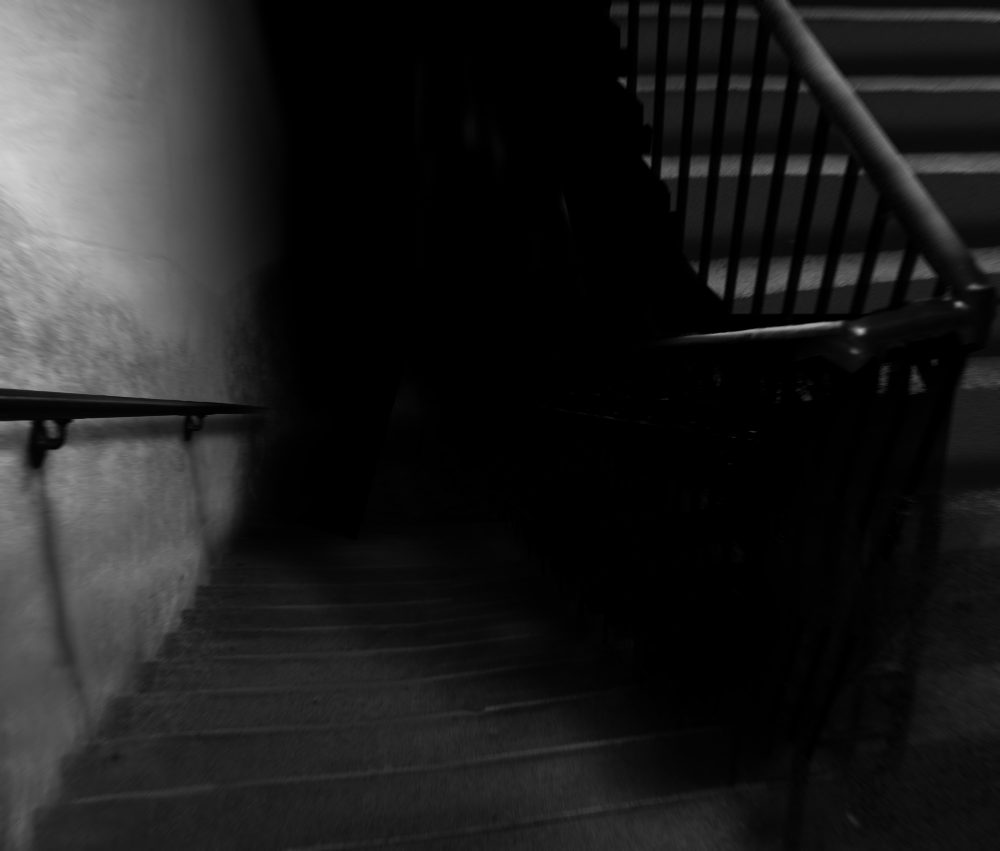

CLASSIFIED INFORMATION
The following information is only for the eyes of Class B Personnel and above or lower level personnel that have otherwise been given security clearance for SCP related testing. Civilians accessing this site will be tracked and terminated. Proceed with your own judgment.
You have been warned.
Welcome to the SCP Foundation
Why Am I Here?
You have been deemed unfit for normal society, by what means you accomplished that, we will not disclose. You were administered Class A amnestics, so you will remember nothing about your old life. We are a secret organization trusted by every major national government with keeping a sane world for the common man. 'Anomalies' are what you will help us Secure, Contain, and Protect. I won't go into too much detail, you don't need to know much. You are a test subject, a stick for us to poke with. You are expendable, but consider yourself lucky; there are billionaires who would give all they have to know just a little of what you will know.

Above is a picture of SCP-087. It is on a college campus in Attenborough, Nevada. We have disguised the doorway to it as a normal janitors closet, but can only be opened by Level A NFC Security Clearance.
It is, as far as we know, a never ending stairwell. Every time it is re-opened, something is different. We've sent a few other 'sticks' down there, and about fifty flights down, all of them radioed in saying they could hear a child screaming for help several flights down.
Sticks aren't the brightest agents in our organization, but even they were scared.
Of course, if sticks don't cooperate, they're terminated, so that was a good motivator.
One gentleman heard the child start screaming his name for help, which made him so upset he climbed all the way back to the top, and after we questioned him, we terminated him.
Another man descended 400 flights of stairs, and when he stopped to take a break, he saw a sort of floating organic mask right in front of him. That's what was described in screams, at least, right before the radio signal was cut short and he was never heard from again. YOU are our third subject. Below is the address and security permission. Good luck!
Address Security Clearance